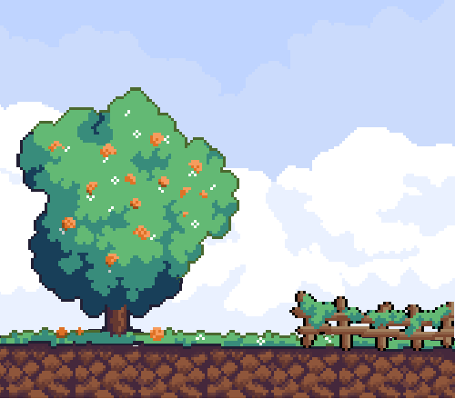

the lonely orange tree
Medium: Aseprite
I have always loved the look of pixel art, especially in video games. When I started creating art digitally, I realized I could create my own, and even use my art as sprites in a video game. I quickly realized how different this art form was compared to anything I was used to. The workflow was less similar to sketching and more similar to sculpting. It wasn’t common to start with line-art, then move on to colors, etc. Instead, you sculpted out the silhouette of the object, refined it, colored it, and finally added an outline. This was a very different process for me, and while I am still new to pixel art, I've enjoyed the learning curve it’s presented me with.